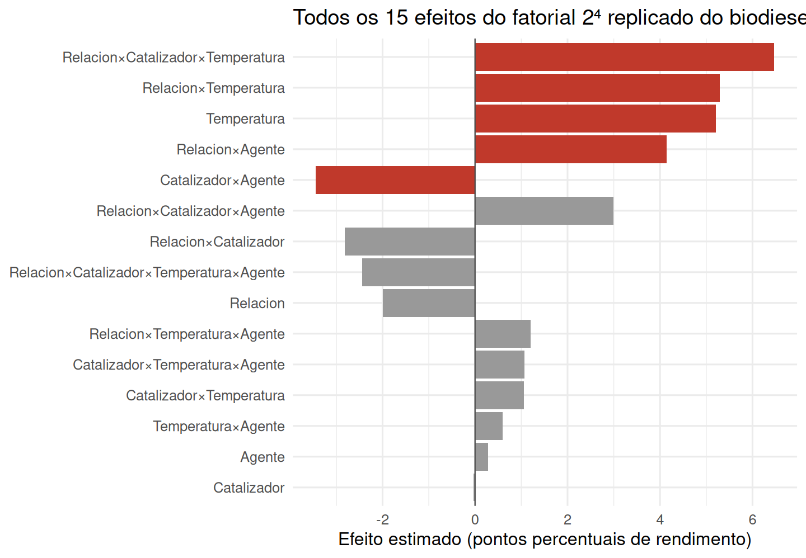
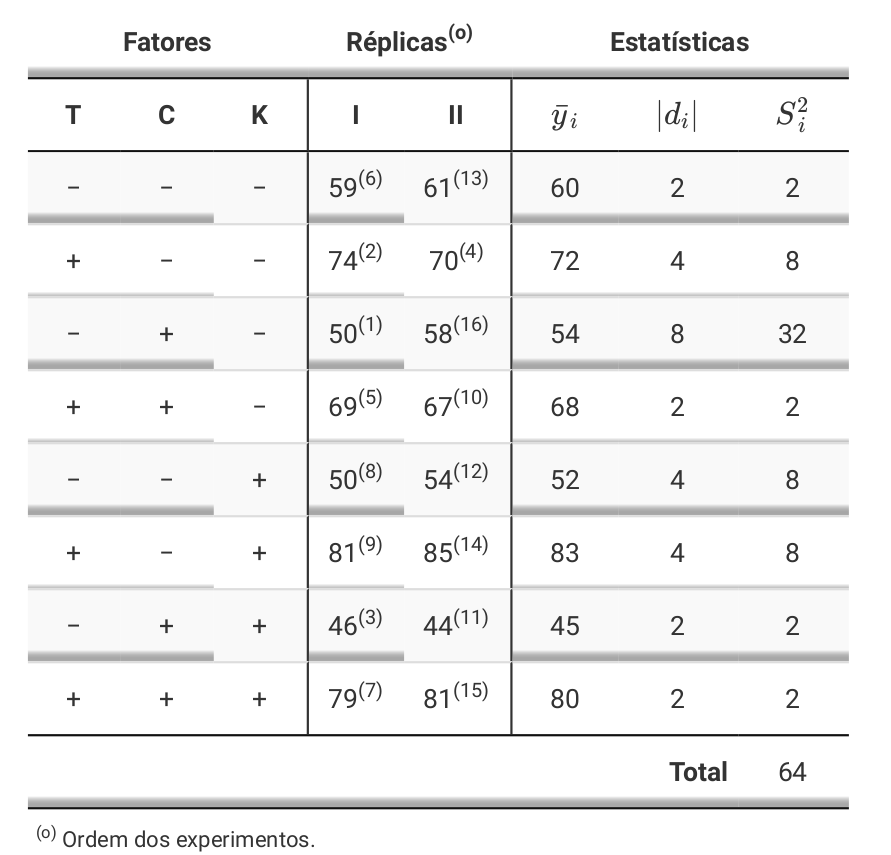
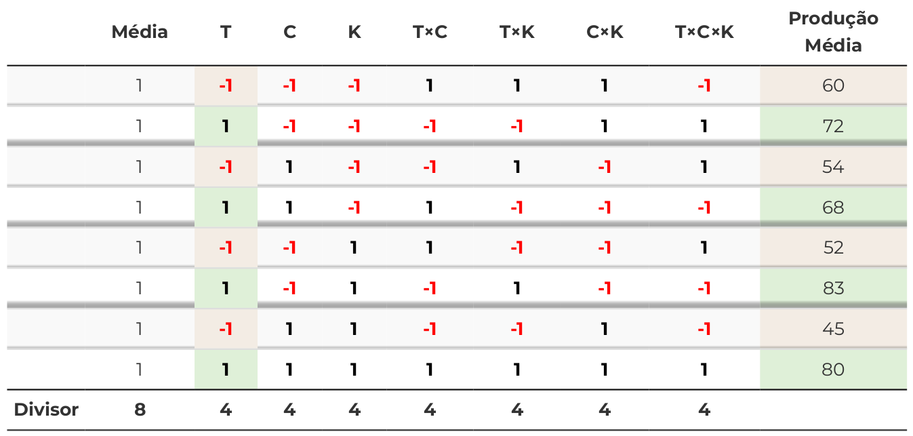

6.1 Fatoriais \(2^k\): notação e ANOVA
Com \(k\) fatores de dois níveis cada, há \(2^k\) tratamentos distintos. Por convenção, codificamos
o nível baixo como \(-1\) e o alto como \(+1\) (ou, na notação clássica de Yates, o nível baixo de um
fator recebe a letra minúscula ausente e o alto a letra presente: (1), a, b, ab para
\(k=2\)). Um efeito — principal ou de interação — é definido como a diferença média na resposta
ao mover o(s) fator(es) envolvido(s) do nível baixo ao alto, e pode ser calculado diretamente como
duas vezes o coeficiente de uma regressão da resposta sobre as colunas codificadas em \(\pm 1\)
(e suas interações, construídas por produto de colunas):
\[ \text{efeito}_A = \bar{y}(A{=}{+}1) - \bar{y}(A{=}{-}1) = 2\hat{\beta}_A, \qquad \text{efeito}_{AB} = 2\hat{\beta}_{AB}, \ \ldots \]
Com \(r\) repetições por tratamento, a ANOVA de um \(2^k\) é um caso especial da tabela do Capítulo 5: cada efeito principal e cada interação (de ordem 2 até ordem \(k\)) tem exatamente 1 grau de liberdade (porque cada fator só tem 2 níveis), e o erro tem \(2^k(r-1)\) graus de liberdade. Isso faz a tabela de ANOVA de um \(2^k\) replicado ser simples de ler: cada linha é uma pergunta binária sobre um único contraste.
Uma planta piloto de biodiesel testa quatro fatores de processo, cada um em dois níveis codificados ($-1$/$+1$): razão molar álcool:óleo (
Relacion), tipo de catalisador
(Catalizador), temperatura de reação (Temperatura) e agente de
purificação (Agente). O fatorial $2^4$ completo (16 tratamentos) foi executado com
duas repetições (32 corridas), medindo o rendimento percentual de biodiesel.
# Mantemos os quatro fatores em sua codificação numérica original (-1/+1), em vez de
# convertê-los para factor(): a seção "Ortogonalidade da matriz de desenho" mostra que é exatamente essa
# codificação simétrica que faz X'X ser diagonal. A tabela de ANOVA abaixo não muda em nada
# — soma de quadrados de um fatorial 2^k balanceado não depende de como cada fator é codificado —
# mas as próximas seções (contraste de Yates, Lenth) dependem disso de forma essencial.
biodiesel <- read_csv("data/biodiesel.csv", show_col_types = FALSE)
modelo_2k <- aov(Rendimiento ~ Relacion * Catalizador * Temperatura * Agente, data = biodiesel)
broom::tidy(modelo_2k) %>%
filter(p.value < 0.10 | is.na(p.value)) %>%
mutate(across(where(is.numeric), ~round(., 4))) %>%
kable(caption = "Termos com p < 0,10 na ANOVA completa do fatorial 2⁴ (rendimento de biodiesel)") %>%
kable_styling(full_width = FALSE)| term | df | sumsq | meansq | statistic | p.value |
|---|---|---|---|---|---|
| Temperatura | 1 | 216.8403 | 216.8403 | 10.4857 | 0.0051 |
| Relacion:Catalizador | 1 | 63.5628 | 63.5628 | 3.0737 | 0.0987 |
| Relacion:Temperatura | 1 | 224.1903 | 224.1903 | 10.8411 | 0.0046 |
| Relacion:Agente | 1 | 137.3653 | 137.3653 | 6.6425 | 0.0203 |
| Catalizador:Agente | 1 | 94.8753 | 94.8753 | 4.5879 | 0.0479 |
| Relacion:Catalizador:Temperatura | 1 | 334.7578 | 334.7578 | 16.1878 | 0.0010 |
| Relacion:Catalizador:Agente | 1 | 71.7003 | 71.7003 | 3.4672 | 0.0811 |
| Residuals | 16 | 330.8750 | 20.6797 | NA | NA |
Com as duas repetições, cinco termos emergem como estatisticamente relevantes (\(p<0{,}05\)): o efeito principal da temperatura, as interações duplas razão:temperatura, razão:agente e catalisador:agente, e — o efeito dominante — a interação tripla razão:catalisador:temperatura (\(p \approx 0{,}001\)). Voltaremos a este mesmo conjunto de dados na próxima seção, mas fingindo, por um momento, que só tínhamos rodado uma repetição — o cenário mais comum na prática, porque cada corrida de um fatorial \(2^k\) completo já é cara, e dobrar o número de corridas para obter uma repetição raramente é viável quando \(k\) é grande.

Figure 6.1: Os quinze efeitos estimados do fatorial 2⁴ replicado (duas repetições cada). Barras vermelhas marcam os cinco termos com p<0,05 na ANOVA completa: o efeito principal de temperatura, três interações duplas e a interação tripla dominante.
O painel deixa visível, de um só golpe, o que a tabela de p-valores só confirma termo a termo: a interação tripla razão:catalisador:temperatura não é apenas “significativa” — é, em magnitude, o maior de todos os quinze efeitos, maior até que o efeito principal da temperatura sozinho. Os outros dez efeitos não destacados (barras cinzas) se acumulam perto de zero, um padrão visual que antecipa exatamente o que a Seção 6.2 explora a seguir: a maioria dos efeitos de um fatorial \(2^k\) tende a ser pequena, e só uns poucos se destacam — o princípio da esparsidade dos efeitos, aqui visto com a repetição completa disponível, antes de precisarmos de qualquer método que dispense repetição para enxergá-lo.
6.1.1 Ortogonalidade da matriz de desenho
A Seção 5.4 mostrou que a matriz \(\mathbf{X}\) de um fatorial A×B se monta em blocos \([\mathbf{1}\ |\ \mathbf{X}_A\ |\ \mathbf{X}_B\ |\ \mathbf{X}_A \odot \mathbf{X}_B]\). No \(2^k\) codificado em \(\{-1,+1\}\), essa construção ganha uma propriedade extra e muito especial: todas as colunas de \(\mathbf{X}\) — incluindo o intercepto e todas as colunas de interação, de qualquer ordem — são mutuamente ortogonais, isto é, \(\mathbf{X}'\mathbf{X}\) é uma matriz diagonal (cada entrada fora da diagonal é o produto interno de duas colunas de \(\pm1\)’s, que se cancela exatamente quando o desenho é balanceado). Isso não é uma coincidência do desenho — é uma consequência direta de cada coluna assumir apenas os valores \(\pm1\) em proporções iguais e de forma cruzada.
X <- model.matrix(~ Relacion * Catalizador * Temperatura * Agente, data = biodiesel)
XtX <- t(X) %*% X
# Todas as entradas fora da diagonal são zero?
all(XtX[upper.tri(XtX)] == 0)## [1] TRUE## [1] 32 32Quando \(\mathbf{X}'\mathbf{X}\) é diagonal, sua inversa também é diagonal — basta inverter cada elemento — e as equações normais \(\mathbf{X}'\mathbf{X}\hat{\boldsymbol{\beta}} = \mathbf{X}'\mathbf{Y}\) do Capítulo 2 (Seção 2.3) se desacoplam completamente: cada coeficiente \(\hat\beta_j\) passa a ter uma fórmula fechada que não depende de nenhum outro coeficiente,
\[ \hat\beta_j = \frac{\mathbf{x}_j'\mathbf{Y}}{\mathbf{x}_j'\mathbf{x}_j} = \frac{\mathbf{x}_j'\mathbf{Y}}{n}, \qquad \text{efeito}_j = 2\hat\beta_j = \frac{2}{n}\,\mathbf{x}_j'\mathbf{Y} = \frac{2}{n}\sum_{i=1}^n (\pm 1)\, y_i, \]
isto é, cada efeito é (duas vezes) o produto interno da coluna de sinais \(\mathbf{x}_j\) com a resposta, normalizado pela norma ao quadrado da coluna. Essa é exatamente a fórmula clássica do “contraste de Yates” — soma da resposta com sinal \(+\) menos soma com sinal \(-\), dividida pela metade do número de corridas — só que agora obtida como caso particular da álgebra de mínimos quadrados do Capítulo 2, não como uma regra memorizada à parte.
y <- biodiesel$Rendimiento
xa <- X[, "Relacion"] # coluna de sinais ±1 do fator Relação
efeito_via_produto_interno <- 2 * sum(xa * y) / sum(xa * xa)
efeito_via_regressao <- 2 * coef(lm(Rendimiento ~ Relacion * Catalizador *
Temperatura * Agente, data = biodiesel))["Relacion"]
c(produto_interno = efeito_via_produto_interno,
regressao = unname(efeito_via_regressao))## produto_interno regressao
## -1.99375 -1.99375A ortogonalidade tem uma segunda consequência, agora sobre a ANOVA: como as colunas são ortogonais, a soma de quadrados de cada efeito é \(SQ_j = n\,\hat\beta_j^2\) e a soma de quadrados total se decompõe exatamente na soma das \(SQ_j\) de todos os efeitos — sem nenhum termo cruzado. É por isso que, em um \(2^k\) balanceado, é possível estimar e testar cada efeito isoladamente, um de cada vez, sem que a ordem em que os fatores entram no modelo afete o resultado (ao contrário de desenhos desbalanceados, em que \(\mathbf{X}'\mathbf{X}\) deixa de ser diagonal e a soma de quadrados de cada termo passa a depender de quais outros termos já estão no modelo — o problema das “somas de quadrados Tipo I vs. Tipo III” que volta a aparecer sempre que o balanceamento se perde).
6.1.2 O algoritmo tabular de Yates
A Seção anterior obteve cada efeito como um produto interno, \(\text{efeito}_j = \tfrac{2}{n} \mathbf{x}_j'\mathbf{Y}\). Antes de existirem pacotes estatísticos, essa conta era feita literalmente assim, à mão: monta-se uma tabela com uma coluna de sinais \(\pm1\) para cada efeito — principais e interações —, multiplica-se cada coluna pela resposta média do tratamento correspondente, somam-se os produtos e divide-se pelo divisor apropriado. O exemplo clássico a seguir — um \(2^3\) com fatores de processo \(T\), \(C\) e \(K\), cada um em dois níveis, com duas réplicas — é reproduzido do material de aula do curso e ilustra esse procedimento numericamente, antes de o formalizarmos como um algoritmo mais rápido e o reproduzirmos em R sobre os próprios dados do biodiesel.

Figure 6.2: Um 2³ clássico com fatores T, C e K (duas réplicas cada, I e II). As colunas de sinais (-/+) definem os oito tratamentos em ordem-padrão; as colunas à direita resumem média, amplitude e variância de cada tratamento.

Figure 6.3: A tabela de sinais e contrastes para o 2³ acima: cada coluna (T, C, K, T x C, T x K, C x K, T x C x K) é a coluna de sinais ±1 daquele efeito, multiplicada pela Produção Média de cada tratamento (última coluna) e somada; o resultado, dividido pelo divisor do rodapé, é o efeito estimado – exatamente o produto interno da Seção 6.1.1.
Figure 6.4: Cálculo manual do efeito de interação dupla T x C (temperatura x catalisador) no mesmo exemplo 2^3: as quatro combinações com sinal ‘+’ (diagonal do cubo) contra as quatro com sinal ‘-’ produzem a mesma conta que a coluna ‘T x C’ da tabela de sinais – a leitura geométrica (planos diagonais do cubo, seção sobre o cubo do 2 ao cubo do Capítulo 5) e a leitura tabular (produto de colunas de sinais) chegam ao mesmo número.
Essa tabela é a versão numérica, célula a célula, da fórmula algébrica \(\text{efeito}_j = \tfrac{2}{n}\mathbf{x}_j'\mathbf{Y}\): cada coluna de sinais é uma coluna \(\mathbf{x}_j\) diferente
(a de “T” é o efeito principal do fator \(T\); a de “T×C” é o produto elemento a elemento das colunas
de \(T\) e \(C\), exatamente como a Seção 5.4 descreveu para o caso geral A×B); a soma dos
produtos sinal\(\times\)resposta é o numerador do produto interno; e o “Divisor” do rodapé — \(4\) para
qualquer efeito neste \(2^3\) — é \(2^{k-1}\), a metade do número de tratamentos, que aparece porque a
tabela já trabalha com a produção média de cada tratamento (a média das duas réplicas), não com
o total. Montar essa tabela inteira, coluna a coluna, é exatamente o que os pesquisadores faziam
antes de qualquer software — e é exatamente o que model.matrix() faz por trás dos panos hoje.
Montar a tabela de sinais completa fica caro rapidamente: um \(2^k\) tem \(2^k-1\) colunas de sinal,
cada uma com \(2^k\) entradas. Yates (1937) percebeu que não é preciso montar a
tabela inteira:
os mesmos \(2^k\) contrastes podem ser obtidos com apenas \(k\) passadas sucessivas de somas e
diferenças sobre os totais de tratamento dispostos em ordem-padrão ((1), a, b, ab, c, ac, bc, abc, ..., em que cada letra sucessiva repete o bloco de tratamentos já listado, acrescentando-o
com o novo fator no nível alto). Em cada passada: (i) a primeira metade do novo vetor é a soma de
pares consecutivos do vetor anterior; (ii) a segunda metade é a diferença (segundo menos primeiro)
desses mesmos pares. Depois de \(k\) passadas, a primeira entrada do vetor final é o total geral, e
cada entrada seguinte é o contraste de um efeito — na mesma ordem-padrão dos rótulos —, pronto
para ser dividido por \(n\,2^{k-1}\) (obtendo o efeito) ou elevado ao quadrado e dividido por
\(n\,2^k\) (obtendo sua soma de quadrados, a mesma \(SQ_j = n\hat\beta_j^2\) da Seção
6.1.1). O ganho é computacional, não conceitual: \(k\,2^k\) somas/diferenças no
total, contra a ordem \(2^k(2^k-1)\) de operações da tabela de sinais completa — uma economia que
importava muito com lápis e papel, e que hoje sobrevive sobretudo por seu valor didático.
# Uma passada do algoritmo: metade inferior = somas de pares consecutivos,
# metade superior = diferencas (segundo menos primeiro) dos mesmos pares
passada_yates <- function(v) {
n <- length(v)
somas <- v[seq(1, n, by = 2)] + v[seq(2, n, by = 2)]
diferencas <- v[seq(2, n, by = 2)] - v[seq(1, n, by = 2)]
c(somas, diferencas)
}
algoritmo_yates <- function(totais, k) {
v <- totais
for (passo in seq_len(k)) v <- passada_yates(v)
v
}
# Reaproveitando o 2^4 do biodiesel (secao "Fatoriais 2^k: notacao e ANOVA"): totais de tratamento
# em ordem-padrao (1, a, b, ab, c, ac, ..., abcd), construida a partir dos 4 bits do indice
k <- 4
ordem_padrao <- tibble(idx = 0:(2^k - 1)) %>%
mutate(
Relacion = if_else(bitwAnd(idx, 1L) > 0, 1, -1),
Catalizador = if_else(bitwAnd(idx, 2L) > 0, 1, -1),
Temperatura = if_else(bitwAnd(idx, 4L) > 0, 1, -1),
Agente = if_else(bitwAnd(idx, 8L) > 0, 1, -1)
)
totais_trat <- ordem_padrao %>%
left_join(
biodiesel %>% group_by(Relacion, Catalizador, Temperatura, Agente) %>%
summarise(total = sum(Rendimiento), n = n(), .groups = "drop"),
by = c("Relacion", "Catalizador", "Temperatura", "Agente")
)
v_final <- algoritmo_yates(totais_trat$total, k)
r <- unique(totais_trat$n) # 2 replicas por tratamento
efeitos_yates <- v_final[-1] / (r * 2^(k - 1)) # descarta o total geral (posicao 1)
# Efeitos ja calculados via produto interno / regressao (secao "Ortogonalidade da matriz de desenho")
efeitos_regressao <- 2 * coef(lm(Rendimiento ~ Relacion * Catalizador * Temperatura * Agente,
data = biodiesel))[-1]
max(abs(sort(efeitos_yates) - sort(efeitos_regressao)))## [1] 1.676437e-14A diferença máxima entre os 15 efeitos calculados pelo algoritmo tabular e os mesmos 15 efeitos obtidos por regressão é numericamente zero: as duas rotas — produto interno de colunas de sinais e somas/diferenças sucessivas — chegam exatamente ao mesmo resultado, porque são, algebricamente, a mesma conta organizada de duas formas diferentes. A vantagem do algoritmo de Yates nunca foi precisão adicional, e sim custo computacional: \(k\) passadas de \(2^{k-1}\) somas e \(2^{k-1}\) diferenças cada (\(k\,2^k\) operações ao todo) contra o cálculo de \(2^k-1\) produtos internos de comprimento \(2^k\) cada (proporcional a \(2^k(2^k-1)\) operações) — uma economia que importava muito quando as contas eram feitas à mão ou em calculadoras mecânicas, e que hoje sobrevive sobretudo por seu valor didático: tornar visível, coluna a coluna, como cada efeito de ordem crescente nasce dos efeitos de ordem menor já calculados.